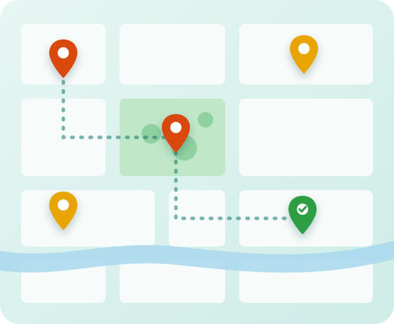

Zeladoria colaborativa
A sua rua,
A sua rua,
cuidada de verdade.
Viu um buraco, uma lâmpada queimada ou lixo na calçada? Marque no mapa em menos de um minuto. Quanto mais vizinhos apoiam, mais alto o problema sobe na fila.
- – relatos
- – resolvidos
- – dias até resolver

Como funciona
Três passos, sem cadastro e sem dar nome, e-mail ou telefone.
-
1
Marque no mapa
Busque o endereço ou use a sua localização e escolha o tipo de problema.
-
2
Vizinhos apoiam
Quem passa pelo mesmo problema toca em “Apoiar”. Os mais apoiados aparecem primeiro.
-
3
Acompanhe
O responsável atualiza a situação: aberto, em andamento ou resolvido.
O que está acontecendo na cidade
aberto em andamento resolvido
Os relatos marcados como simulado são dados fictícios, criados para demonstração.
Mais apoiados
Relatar um problema
Leva menos de um minuto. Não pedimos nenhum dado pessoal.